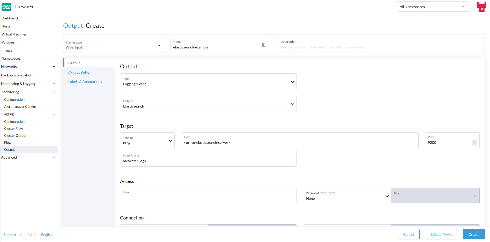
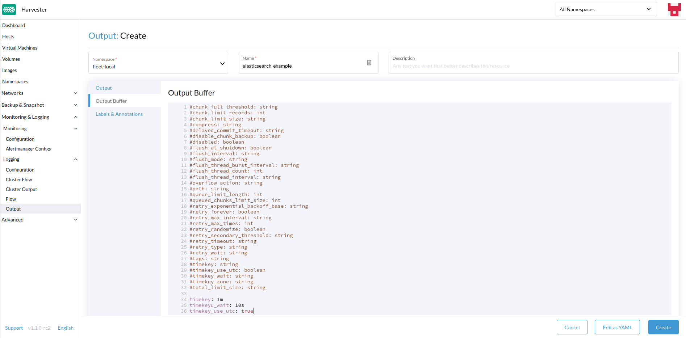
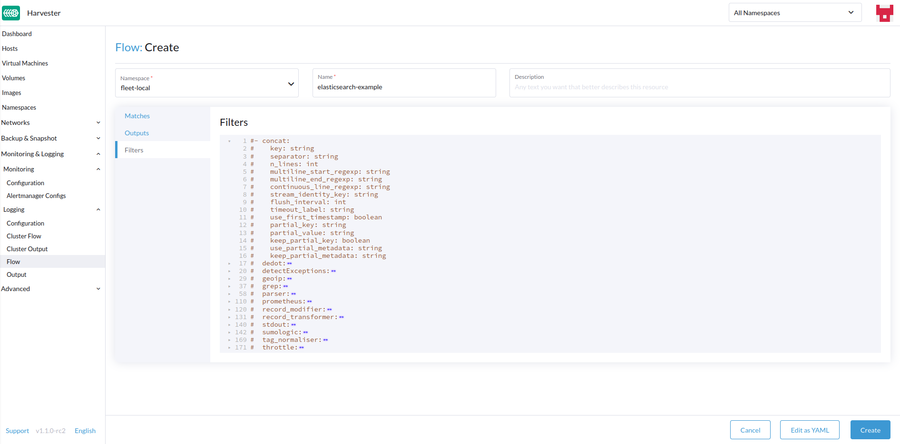

|
Este documento foi traduzido usando tecnologia de tradução automática de máquina. Sempre trabalhamos para apresentar traduções precisas, mas não oferecemos nenhuma garantia em relação à integridade, precisão ou confiabilidade do conteúdo traduzido. Em caso de qualquer discrepância, a versão original em inglês prevalecerá e constituirá o texto official. |
Registro
É importante saber o que está acontecendo/aconteceu no Harvester Cluster.
Harvester coleta o cluster running log, kubernetes audit e event log logo após o cluster ser ligado, o que é útil para monitoramento, registro, auditoria e solução de problemas.
Harvester suporta o envio desses logs para vários tipos de servidores de log.
|
O tamanho dos dados de registro está relacionado à escala do cluster, carga de trabalho e outros fatores. |
O recurso de registro agora está implementado com um complemento e está desativado por padrão em novas instalações.
Os usuários podem ativar/desativar o rancher-logging complemento na interface do Harvester após a instalação.
Os usuários também podem ativar/desativar o rancher-logging complemento na instalação do Harvester personalizando o arquivo de configuração.
Para clusters do Harvester atualizados da versão v1.1.x, o recurso de registro é convertido automaticamente em um complemento e mantido ativado como antes.
Arquitetura de Alto Nível
Tanto o Harvester quanto o Rancher usam o Logging Operator para gerenciar componentes e operações específicas da infraestrutura interna de registro.

Na prática do Harvester, o Logging, Audit e Event compartilham uma arquitetura, o Logging é a infraestrutura, enquanto o Audit e Event estão acima dela.
Registro
A infraestrutura de registro do Harvester permite agregar logs do Harvester em um serviço externo como Graylog, Elasticsearch, Splunk, Grafana Loki e outros.
Logs Coletados
Veja abaixo uma lista de logs que são coletados:
-
Logs de todos os clusters
Pods -
Logs do kernel de cada
node -
Logs de serviços systemd selecionados de cada nó
-
rke2-server -
rke2-agent -
rancherd -
rancher-system-agent -
NetworkManager -
iscsid
-
|
Os usuários podem configurar e modificar para onde os logs agregados são enviados, bem como alguns filtros básicos. Não é suportado alterar quais logs são coletados. |
Configurando Recursos de Log
Abaixo do Operador de Log estão Fluentd e Fluent Bit, que lidam com a coleta e roteamento de logs. Se desejado, você pode modificar quantos recursos são dedicados a esses componentes.
Da UI
-
Vá para a página Avançado > Complementos e selecione o add-on rancher-logging.
-
Na aba Fluentbit, altere os pedidos e limites de recursos.
-
Na aba Fluentd, altere os pedidos e limites de recursos.
-
Selecione Salvar ao terminar de configurar as definições para o complemento rancher-logging.

|
A configuração da UI só é visível quando o complemento rancher-logging está habilitado. |
Pelo CLI
Você pode usar o seguinte comando kubectl para alterar as configurações de recursos para o complemento rancher-logging: kubectl edit addons.harvesterhci.io -n cattle-logging-system rancher-logging.
O caminho do recurso e os valores padrão são os seguintes.
apiVersion: harvesterhci.io/v1beta1
kind: Addon
metadata:
name: rancher-logging
namespace: cattle-logging-system
spec:
valuesContent: |
fluentbit:
resources:
limits:
cpu: 200m
memory: 200Mi
requests:
cpu: 50m
memory: 50Mi
fluentd:
resources:
limits:
cpu: 1000m
memory: 800Mi
requests:
cpu: 100m
memory: 200Mi
|
Você ainda pode fazer ajustes de configuração quando o complemento está desativado. No entanto, essas mudanças só têm efeito quando você reativa o complemento. |
Verificação de Recursos Pendentes
Ao habilitar o complemento rancher-logging, você pode encontrar o seguinte erro:
Você também pode observar que as implantações relacionadas ao complemento não estão totalmente concluídas.
Para evitar que o erro ocorra novamente, execute as seguintes ações antes de habilitar o complemento:
-
Atualize ou exclua os recursos pendentes afetados.
-
Adicione a anotação
harvesterhci.io/skipRancherLoggingAddonWebhookCheck: "true"ao complemento.
Configurando Destinos de Log
As operações de registro são suportadas pelo Logging Operator e controladas usando recursos do Fluentd, particularmente Flow e ClusterFlow e Output e ClusterOutput. Você pode direcionar e filtrar logs aplicando esses CRDs ao cluster do Harvester.
Ao aplicar novos Outputs e Flows ao cluster, pode levar algum tempo para que o Logging Operator os aplique efetivamente. Portanto, por favor, aguarde alguns minutos para que os logs comecem a fluir.
Agrupado vs Namespaced
Uma coisa importante a entender ao direcionar logs é a diferença entre ClusterFlow vs Flow e ClusterOutput vs Output. A principal diferença entre a versão agrupada e a não agrupada de cada um é que as versões não agrupadas são namespaced.
A maior implicação disso é que Flows só pode acessar Outputs que estão dentro do mesmo namespace, mas ainda pode acessar qualquer ClusterOutput.
Para mais informações, consulte a documentação:
Da UI
|
As imagens da interface do usuário são para |
Criando Saídas
-
Escolha a opção para criar um novo
OutputouClusterOutput. -
Se estiver criando um
Output, selecione o namespace desejado. -
Adicione um nome para os recursos.
-
Selecione o tipo de log.
-
Selecione o tipo de saída de log.

-
Configure o buffer de saída, se necessário.

-
Adicione quaisquer rótulos ou anotações.

-
Quando terminar, clique
Createno canto inferior direito.
|
Dependendo da saída selecionada (Splunk, Elasticsearch, etc.), haverá campos adicionais a serem especificados no formulário. |
Saída
O formulário mostra os campos que estão disponíveis para a saída output selecionada.
Buffer de Saída
O editor permite que você descreva o comportamento preferido do buffer de saída usando vários campos.
Criando Fluxos
-
Escolha a opção para criar um novo
FlowouClusterFlow. -
Se estiver criando um
Flow, selecione o namespace desejado. -
Adicione um nome para o recurso.
-
Selecione os nós cujos logs você deseja incluir ou excluir.

-
Selecione o destino
OutputseClusterOutputs.
-
Adicione quaisquer filtros, se desejar.

-
Quando terminar, clique
Createno canto inferior esquerdo.
Correspondências
As correspondências permitem que você filtre quais logs deseja incluir no Flow. O formulário só permite incluir ou excluir logs de nós, mas se necessário, você pode adicionar outras regras de correspondência suportadas pelo recurso selecionando Edit as YAML.
Para mais informações sobre a diretiva de correspondência, consulte Match statement.
Saídas
As saídas permitem que você selecione um ou mais OutputRefs para enviar os logs agregados. Ao criar ou editar um Flow / ClusterFlow, é necessário que o usuário selecione pelo menos um Output.
|
Deve haver pelo menos um |
Filtros
Os filtros permitem que você transforme, processe e modifique os logs. Para mais informações, consulte a lista de filtros suportados.
Pela CLI
Para configurar rotas de log via linha de comando, você só precisa definir os arquivos YAML para os recursos relevantes:
# elasticsearch-logging.yaml
apiVersion: logging.banzaicloud.io/v1beta1
kind: Output
metadata:
name: elasticsearch-example
namespace: fleet-local
labels:
example-label: elasticsearch-example
annotations:
example-annotation: elasticsearch-example
spec:
elasticsearch:
host: <url-to-elasticsearch-server>
port: 9200
---
apiVersion: logging.banzaicloud.io/v1beta1
kind: Flow
metadata:
name: elasticsearch-example
namespace: fleet-local
spec:
match:
- select: {}
globalOutputRefs:
- elasticsearch-exampleE então aplicá-los:
kubectl apply -f elasticsearch-logging.yamlReferenciando Segredos
Você pode definir valores secretos (em formato YAML) usando qualquer um dos seguintes métodos:
O mais simples é usar a chave value, que é um valor de string simples para o segredo desejado. Este método deve ser usado apenas para testes e nunca em produção:
aws_key_id:
value: "secretvalue"O próximo é usar valueFrom, que permite referenciar um valor específico de um segredo por um par de nome e chave:
aws_key_id:
valueFrom:
secretKeyRef:
name: <kubernetes-secret-name>
key: <kubernetes-secret-key>Alguns plugins requerem um arquivo para ler em vez de simplesmente receber um valor do segredo (isso é frequentemente o caso para arquivos de certificado CA). Nesses casos, você precisa usar mountFrom, que montará o segredo como um arquivo na implantação subjacente fluentd e apontará o plugin para o arquivo. Os objetos valueFrom e mountFrom parecem iguais:
tls_cert_path:
mountFrom:
secretKeyRef:
name: <kubernetes-secret-name>
key: <kubernetes-secret-key>Para mais informações, consulte Definição de segredo.
Exemplo Outputs
-
Elasticsearch
-
Graylog
-
Splunk
-
Loki
Para a implantação mais simples, você pode implantar o Elasticsearch em seu sistema local usando docker:
sudo docker run --name elasticsearch -p 9200:9200 -p 9300:9300 -e xpack.security.enabled=false -e node.name=es01 -e discovery.type=single-node -it docker.elastic.co/elasticsearch/elasticsearch:8.16.6|
Para usar o Elasticsearch com SUSE Virtualization v1.5.0, certifique-se de que o servidor Elasticsearch está executando a versão 8.11.0 ou posterior. Você deve fazer upgrade do Elasticsearch quando o pod |
Certifique-se de que você definiu vm.max_map_count para ser >= 262144 ou o comando docker acima falhará. Uma vez que o servidor Elasticsearch esteja ativo, você pode criar o arquivo yaml para o ClusterOutput e ClusterFlow:
cat << EOF > elasticsearch-example.yaml
apiVersion: logging.banzaicloud.io/v1beta1
kind: ClusterOutput
metadata:
name: elasticsearch-example
namespace: cattle-logging-system
spec:
elasticsearch:
host: 192.168.0.119
port: 9200
buffer:
timekey: 1m
timekey_wait: 30s
timekey_use_utc: true
---
apiVersion: logging.banzaicloud.io/v1beta1
kind: ClusterFlow
metadata:
name: elasticsearch-example
namespace: cattle-logging-system
spec:
match:
- select: {}
globalOutputRefs:
- elasticsearch-example
EOFE aplique o arquivo:
kubectl apply -f elasticsearch-example.yamlApós permitir algum tempo para que o Logging Operator aplique os recursos, você pode testar se os logs estão fluindo.
$ curl localhost:9200/fluentd/_search
{
"took": 1,
"timed_out": false,
"_shards": {
"total": 5,
"successful": 5,
"skipped": 0,
"failed": 0
},
"hits": {
"total": 11603,
"max_score": 1,
"hits": [
{
"_index": "fluentd",
"_type": "fluentd",
"_id": "yWHr0oMBXcBggZRJgagY",
"_score": 1,
"_source": {
"stream": "stderr",
"logtag": "F",
"message": "I1013 02:29:43.020384 1 csi_handler.go:248] Attaching \"csi-974b4a6d2598d8a7a37b06d06557c428628875e077dabf8f32a6f3aa2750961d\"",
"kubernetes": {
"pod_name": "csi-attacher-5d4cc8cfc8-hd4nb",
"namespace_name": "longhorn-system",
"pod_id": "c63c2014-9556-40ce-a8e1-22c55de12e70",
"labels": {
"app": "csi-attacher",
"pod-template-hash": "5d4cc8cfc8"
},
"annotations": {
"cni.projectcalico.org/containerID": "857df09c8ede7b8dee786a8c8788e8465cca58f0b4d973c448ed25bef62660cf",
"cni.projectcalico.org/podIP": "10.52.0.15/32",
"cni.projectcalico.org/podIPs": "10.52.0.15/32",
"k8s.v1.cni.cncf.io/network-status": "[{\n \"name\": \"k8s-pod-network\",\n \"ips\": [\n \"10.52.0.15\"\n ],\n \"default\": true,\n \"dns\": {}\n}]",
"k8s.v1.cni.cncf.io/networks-status": "[{\n \"name\": \"k8s-pod-network\",\n \"ips\": [\n \"10.52.0.15\"\n ],\n \"default\": true,\n \"dns\": {}\n}]",
"kubernetes.io/psp": "global-unrestricted-psp"
},
"host": "harvester-node-0",
"container_name": "csi-attacher",
"docker_id": "f10e4449492d4191376d3e84e39742bf077ff696acbb1e5f87c9cfbab434edae",
"container_hash": "sha256:03e115718d258479ce19feeb9635215f98e5ad1475667b4395b79e68caf129a6",
"container_image": "docker.io/longhornio/csi-attacher:v3.4.0"
}
}
},
...
]
}
}apiVersion: logging.banzaicloud.io/v1beta1
kind: ClusterFlow
metadata:
name: "all-logs-gelf-hs"
namespace: "cattle-logging-system"
spec:
globalOutputRefs:
- "example-gelf-hs"
---
apiVersion: logging.banzaicloud.io/v1beta1
kind: ClusterOutput
metadata:
name: "example-gelf-hs"
namespace: "cattle-logging-system"
spec:
gelf:
host: "192.168.122.159"
port: 12202
protocol: "udp"apiVersion: logging.banzaicloud.io/v1beta1
kind: ClusterOutput
metadata:
name: harvester-logging-splunk
namespace: cattle-logging-system
spec:
splunkHec:
hec_host: 192.168.122.101
hec_port: 8088
insecure_ssl: true
index: harvester-log-index
hec_token:
valueFrom:
secretKeyRef:
key: HECTOKEN
name: splunk-hec-token2
buffer:
chunk_limit_size: 3MB
timekey: 2m
timekey_wait: 1m
---
apiVersion: logging.banzaicloud.io/v1beta1
kind: ClusterFlow
metadata:
name: harvester-logging-splunk
namespace: cattle-logging-system
spec:
filters:
- tag_normaliser: {}
match:
globalOutputRefs:
- harvester-logging-splunkVocê pode seguir as instruções no logging HEP sobre como implantar e visualizar os logs do cluster via Grafana Loki.
apiVersion: logging.banzaicloud.io/v1beta1
kind: ClusterFlow
metadata:
name: harvester-loki
namespace: cattle-logging-system
spec:
match:
- select: {}
globalOutputRefs:
- harvester-loki
---
apiVersion: logging.banzaicloud.io/v1beta1
kind: ClusterOutput
metadata:
name: harvester-loki
namespace: cattle-logging-system
spec:
loki:
url: http://loki-stack.cattle-logging-system.svc:3100
extra_labels:
logOutput: harvester-lokiAuditoria
O Harvester coleta audit do Kubernetes e é capaz de enviar o audit para vários tipos de servidores de log.
O arquivo de política para guiar kube-apiserver é aqui.
Definição de Auditoria
Em kubernetes, os dados de auditoria são gerados por kube-apiserver de acordo com a política definida.
... Audit policy Audit policy defines rules about what events should be recorded and what data they should include. The audit policy object structure is defined in the audit.k8s.io API group. When an event is processed, it's compared against the list of rules in order. The first matching rule sets the audit level of the event. The defined audit levels are: None - don't log events that match this rule. Metadata - log request metadata (requesting user, timestamp, resource, verb, etc.) but not request or response body. Request - log event metadata and request body but not response body. This does not apply for non-resource requests. RequestResponse - log event metadata, request and response bodies. This does not apply for non-resource requests.
Formato de Log de Auditoria
Formato de Log de Auditoria no Kubernetes
Os logs do apiserver do Kubernetes registram auditoria com o seguinte formato JSON em um arquivo local.
{
"kind":"Event",
"apiVersion":"audit.k8s.io/v1",
"level":"Metadata",
"auditID":"13d0bf83-7249-417b-b386-d7fc7c024583",
"stage":"RequestReceived",
"requestURI":"/apis/flowcontrol.apiserver.k8s.io/v1beta2/prioritylevelconfigurations?fieldManager=api-priority-and-fairness-config-producer-v1",
"verb":"create",
"user":{"username":"system:apiserver","uid":"d311c1fe-2d96-4e54-a01b-5203936e1046","groups":["system:masters"]},
"sourceIPs":["::1"],
"userAgent":"kube-apiserver/v1.24.7+rke2r1 (linux/amd64) kubernetes/e6f3597",
"objectRef":{"resource":"prioritylevelconfigurations",
"apiGroup":"flowcontrol.apiserver.k8s.io",
"apiVersion":"v1beta2"},
"requestReceivedTimestamp":"2022-10-19T18:55:07.244781Z",
"stageTimestamp":"2022-10-19T18:55:07.244781Z"
}Saída de Log de Auditoria/Saída de Cluster
Para gerar logs relacionados à auditoria, o Output/ClusterOutput requer que o valor de loggingRef seja harvester-kube-audit-log-ref.
Quando você configura a partir do painel do Harvester, o campo é adicionado automaticamente.
Selecione o tipo Audit Only na lista suspensa Type.

Quando você configura a partir da CLI, por favor, adicione o campo manualmente.
Exemplo:
apiVersion: logging.banzaicloud.io/v1beta1
kind: ClusterOutput
metadata:
name: "harvester-audit-webhook"
namespace: "cattle-logging-system"
spec:
http:
endpoint: "http://192.168.122.159:8096/"
open_timeout: 3
format:
type: "json"
buffer:
chunk_limit_size: 3MB
timekey: 2m
timekey_wait: 1m
loggingRef: harvester-kube-audit-log-ref # this reference is fixed and must be here
Fluxo de Log de Auditoria/Fluxo de Cluster
Para direcionar logs relacionados à auditoria, o Flow/ClusterFlow requer que o valor de loggingRef seja harvester-kube-audit-log-ref.
Quando você configura a partir do painel do Harvester, o campo é adicionado automaticamente.
Selecione o tipo Audit.

Quando você configura a partir da CLI, por favor, adicione o campo manualmente.
Exemplo:
apiVersion: logging.banzaicloud.io/v1beta1
kind: ClusterFlow
metadata:
name: "harvester-audit-webhook"
namespace: "cattle-logging-system"
spec:
globalOutputRefs:
- "harvester-audit-webhook"
loggingRef: harvester-kube-audit-log-ref # this reference is fixed and must be here
Evento
O Harvester coleta event do Kubernetes e é capaz de enviar o event para vários tipos de servidores de log.
Definição de Evento
Kubernetes events são objetos que mostram o que está acontecendo dentro de um cluster, como quais decisões foram tomadas pelo agendador ou por que alguns pods foram expulsos do nó. Todos os componentes principais e extensões (operadores/controladores) podem criar eventos através do API Server.
Eventos não têm relação direta com mensagens de log geradas pelos vários componentes e não são afetados pelo nível de verbosidade do log. Quando um componente cria um evento, ele frequentemente emite uma mensagem de log correspondente. Eventos são coletados pelo API Server após um curto período (tipicamente após uma hora), o que significa que podem ser usados para entender problemas que estão acontecendo, mas você precisa coletá-los para investigar eventos passados.
Eventos são a primeira coisa a se observar para operações de aplicação, assim como de infraestrutura, quando algo não está funcionando como esperado. Mantê-los por um período mais longo é essencial se a falha for resultado de eventos anteriores ou ao conduzir uma análise pós-morte.
Formato de Log de Evento
Formato de Log de Evento no Kubernetes
Um exemplo de kubernetes event:
{
"apiVersion": "v1",
"count": 1,
"eventTime": null,
"firstTimestamp": "2022-08-24T11:17:35Z",
"involvedObject": {
"apiVersion": "kubevirt.io/v1",
"kind": "VirtualMachineInstance",
"name": "vm-ide-1",
"namespace": "default",
"resourceVersion": "604601",
"uid": "1bd4133f-5aa3-4eda-bd26-3193b255b480"
},
"kind": "Event",
"lastTimestamp": "2022-08-24T11:17:35Z",
"message": "VirtualMachineInstance defined.",
"metadata": {
"creationTimestamp": "2022-08-24T11:17:35Z",
"name": "vm-ide-1.170e43cbdd833b62",
"namespace": "default",
"resourceVersion": "604626",
"uid": "0114f4e7-1d4a-4201-b0e5-8cc8ede202f4"
},
"reason": "Created",
"reportingComponent": "",
"reportingInstance": "",
"source": {
"component": "virt-handler",
"host": "harv1"
},
"type": "Normal"
},
Formato de Log de Evento antes de ser enviado para os servidores de log.
Cada event log tem o formato de: {"stream":"","logtag":"F","message":"","kubernetes":{""}}. O kubernetes event está no campo message.
{
"stream":"stdout",
"logtag":"F",
"message":"{
\\"verb\\":\\"ADDED\\",
\\"event\\":{\\"metadata\\":{\\"name\\":\\"vm-ide-1.170e446c3f890433\\",\\"namespace\\":\\"default\\",\\"uid\\":\\"0b44b6c7-b415-4034-95e5-a476fcec547f\\",\\"resourceVersion\\":\\"612482\\",\\"creationTimestamp\\":\\"2022-08-24T11:29:04Z\\",\\"managedFields\\":[{\\"manager\\":\\"virt-controller\\",\\"operation\\":\\"Update\\",\\"apiVersion\\":\\"v1\\",\\"time\\":\\"2022-08-24T11:29:04Z\\"}]},\\"involvedObject\\":{\\"kind\\":\\"VirtualMachineInstance\\",\\"namespace\\":\\"default\\",\\"name\\":\\"vm-ide-1\\",\\"uid\\":\\"1bd4133f-5aa3-4eda-bd26-3193b255b480\\",\\"apiVersion\\":\\"kubevirt.io/v1\\",\\"resourceVersion\\":\\"612477\\"},\\"reason\\":\\"SuccessfulDelete\\",\\"message\\":\\"Deleted PodDisruptionBudget kubevirt-disruption-budget-hmmgd\\",\\"source\\":{\\"component\\":\\"disruptionbudget-controller\\"},\\"firstTimestamp\\":\\"2022-08-24T11:29:04Z\\",\\"lastTimestamp\\":\\"2022-08-24T11:29:04Z\\",\\"count\\":1,\\"type\\":\\"Normal\\",\\"eventTime\\":null,\\"reportingComponent\\":\\"\\",\\"reportingInstance\\":\\"\\"}
}",
"kubernetes":{"pod_name":"harvester-default-event-tailer-0","namespace_name":"cattle-logging-system","pod_id":"d3453153-58c9-456e-b3c3-d91242580df3","labels":{"app.kubernetes.io/instance":"harvester-default-event-tailer","app.kubernetes.io/name":"event-tailer","controller-revision-hash":"harvester-default-event-tailer-747b9d4489","statefulset.kubernetes.io/pod-name":"harvester-default-event-tailer-0"},"annotations":{"cni.projectcalico.org/containerID":"aa72487922ceb4420ebdefb14a81f0d53029b3aec46ed71a8875ef288cde4103","cni.projectcalico.org/podIP":"10.52.0.178/32","cni.projectcalico.org/podIPs":"10.52.0.178/32","k8s.v1.cni.cncf.io/network-status":"[{\\n \\"name\\": \\"k8s-pod-network\\",\\n \\"ips\\": [\\n \\"10.52.0.178\\"\\n ],\\n \\"default\\": true,\\n \\"dns\\": {}\\n}]","k8s.v1.cni.cncf.io/networks-status":"[{\\n \\"name\\": \\"k8s-pod-network\\",\\n \\"ips\\": [\\n \\"10.52.0.178\\"\\n ],\\n \\"default\\": true,\\n \\"dns\\": {}\\n}]","kubernetes.io/psp":"global-unrestricted-psp"},"host":"harv1","container_name":"harvester-default-event-tailer-0","docker_id":"455064de50cc4f66e3dd46c074a1e4e6cfd9139cb74d40f5ba00b4e3e2a7ab2d","container_hash":"docker.io/banzaicloud/eventrouter@sha256:6353d3f961a368d95583758fa05e8f4c0801881c39ed695bd4e8283d373a4262","container_image":"docker.io/banzaicloud/eventrouter:v0.1.0"}
}
Saída do log de eventos/ClusterOutput
Os eventos compartilham o Output/ClusterOutput com Logging.
Selecione Logging/Event na lista suspensa Type.
Fluxo do log de eventos/ClusterFlow
Comparado com o Logging normal Flow/ClusterFlow, o Event relacionado Flow/ClusterFlow tem um campo de correspondência a mais com o valor de event-tailer.
Quando você configura a partir do painel do Harvester, o campo é adicionado automaticamente.
Selecione Event na lista suspensa Type.
Quando você configura a partir da CLI, por favor, adicione o campo manualmente.
Exemplo:
apiVersion: logging.banzaicloud.io/v1beta1
kind: ClusterFlow
metadata:
name: harvester-event-webhook
namespace: cattle-logging-system
spec:
filters:
- tag_normaliser: {}
match:
- select:
labels:
app.kubernetes.io/name: event-tailer
globalOutputRefs:
- harvester-event-webhook